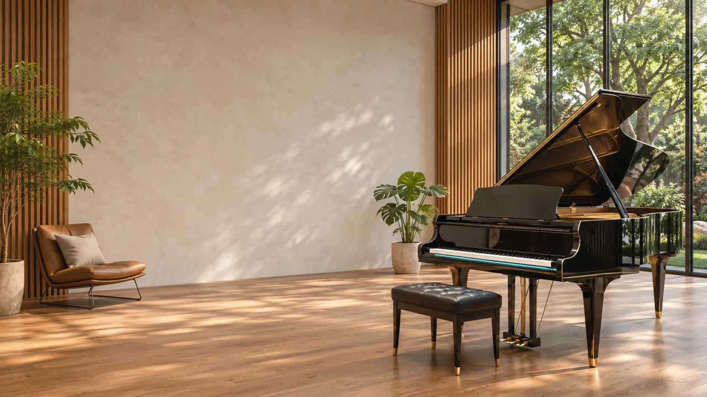

Dein Klavier. Auch ein MIDI-Player.
Wähle ein MIDI-Stück und höre es auf deinem Digitalpiano. Start, Stopp und Tempo steuerst du am Handy, Tablet oder Computer.
PianoCore · Crystal Studio
Dein Klavier, in einem Studio, das inspiriert. Entdecke neue Stücke, folge den Noten und finde Freude am Spielen — in deinem Tempo.
Hören.Spielen.Wachsen.

Musik auf eine neue Art erleben
Vom Lieblingslied bis zum Stück, das du meistern möchtest. Alles findet seinen Platz.
Wähle ein MIDI-Stück und höre es auf deinem Digitalpiano. Start, Stopp und Tempo steuerst du am Handy, Tablet oder Computer.
Noten gleiten zur Kristalltastatur. Licht und Farbe helfen dir, der Musik mit den Augen zu folgen.
Notenblatt, fallende Noten oder beides. Wähle die Ansicht, die dich der Musik näherbringt.
LEDs über der Tastatur folgen der Musik und zeigen dir beim Üben, welche Tasten du spielen sollst.
Steuere die Musik über dein Smart Home. Verbinde das Klavier mit deinen Szenen und Automationen.
Eine übersichtliche Titelliste, schnelle Suche und Playlists für jeden Moment. Vom Stück zum Zuhören bis zum nächsten Lernziel.
MIDI-Player · Bibliothek · Playlists
PianoCore ist auch ein MIDI-Player für dein Klavier. Durchsuche die Bibliothek, finde eine Melodie und wechsle vom Zuhören zum Üben desselben Stücks.
Lernen
Durchatmen. Noch einmal probieren. Geführtes Üben gibt dir Raum, ein Stück zu deinem zu machen.
Gehe zur nächsten Note, wenn du bereit bist.
Wiederhole Abschnitte und reduziere das Tempo.
Lektionen und Fortschritt bleiben in deiner Nähe.
Ein Ort für deine Musik
Warmes Licht für deine Übungszeit am Tag. Eine ruhige Atmosphäre am Abend. Wähle das Licht, das dich inspiriert.


PianoCore verbindet Musik, Licht und Lernen zu einem Erlebnis.
Zurück ins StudioDiese Website stellt PianoCore vor. Nur deine Darstellungseinstellung wird in diesem Browser gespeichert. Die musikalische Illustration läuft ohne Ton.